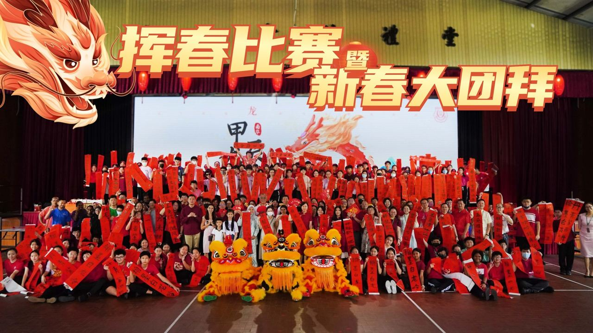
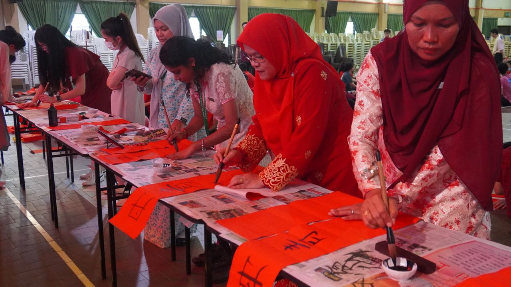
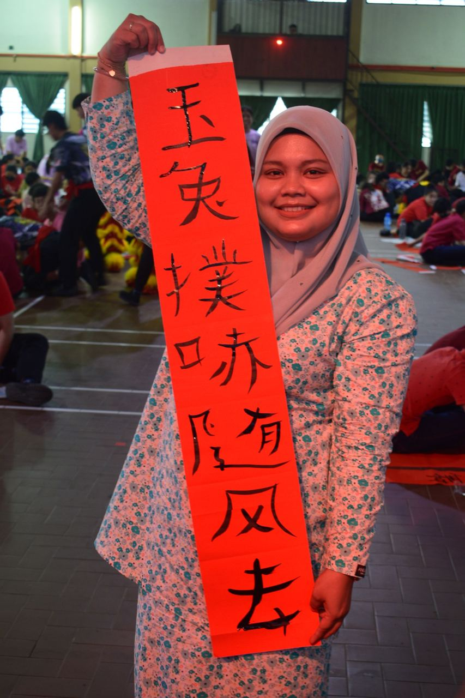
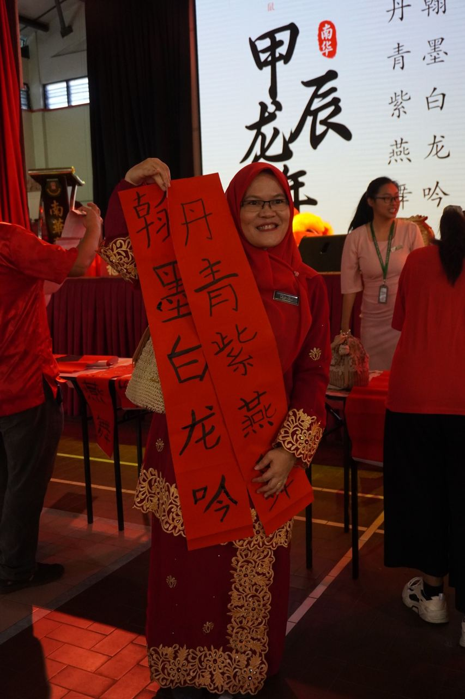
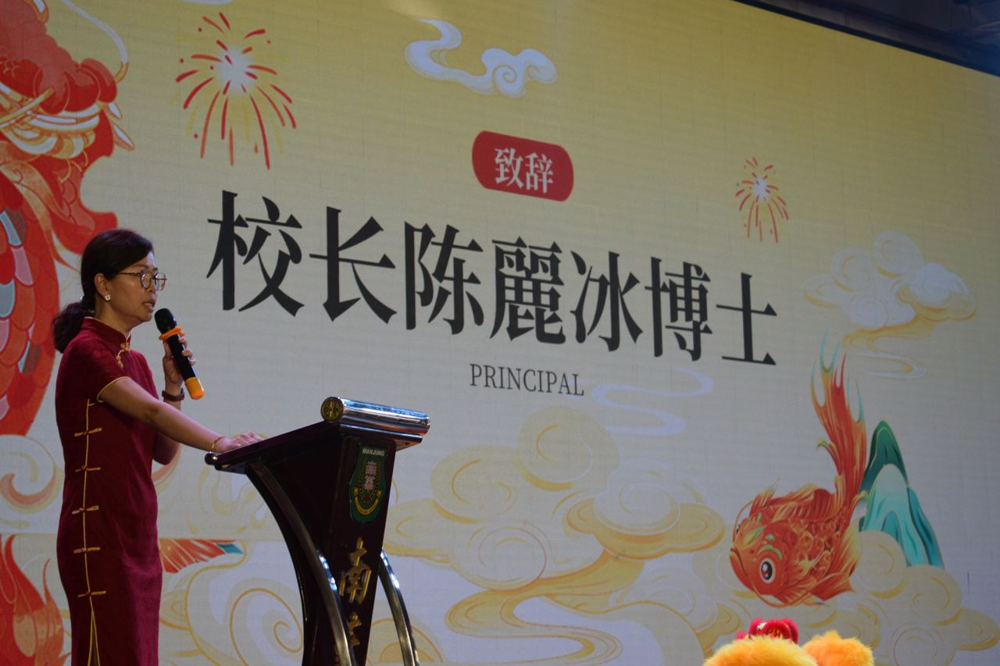
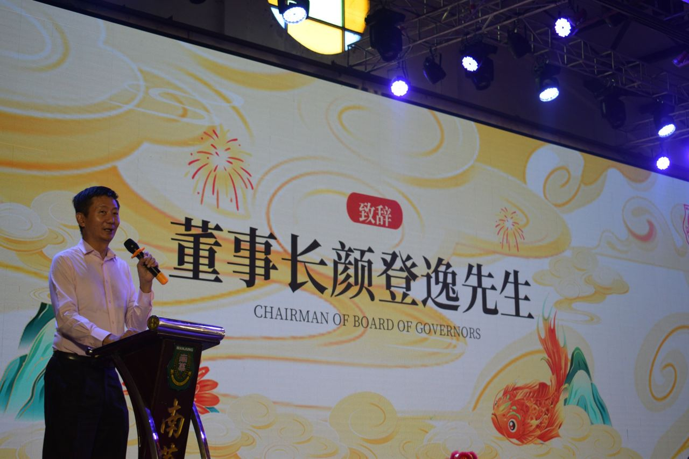
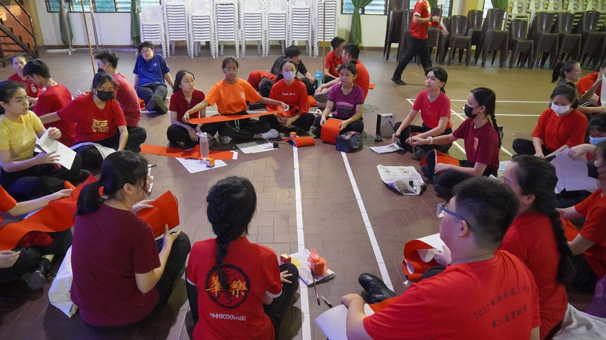
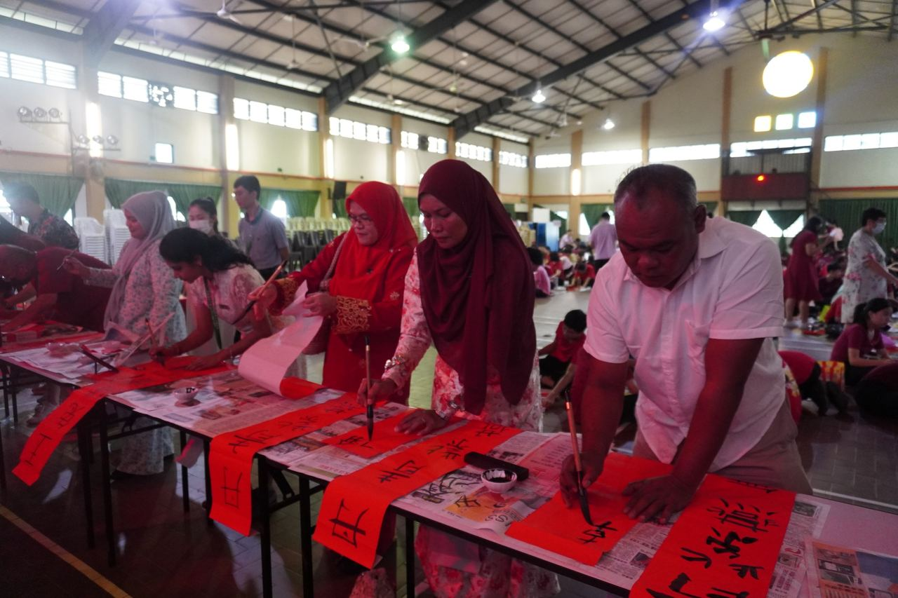

甲辰龙年挥春比赛暨新春大团拜
甲辰龙年挥春比赛暨新春大团拜
三大民族齐挥春庆贺迎接新春
本校南华独中于日前举办甲辰龙年挥春比赛暨新春大团拜，邀请董家教成员前来出席之余，亦诚邀文艺大汇演表演学校之一的SMK Convent Sitiawan舞蹈团的巫裔同胞师生出席共同庆贺，真正落实南华独中所提倡的“美美与共，世界大同”的目标与愿景。
南华独中董事长颜登逸先生致辞中表示，经由文艺大汇演成功举办的经验得知，不同源流与文化差异的学校具备许多可以借鉴与分享的面向，活动的结束并不意味合作的结束，播下友谊种子在日后的频繁接触中逐渐生根发芽。颜董事长在致辞中强调，教育资源并不会因为共享而衰减，反而能够达到百花齐放，福泽学子的双赢成效。
南华独中校长陈丽冰博士以“征程万里风正劲，重任千钧再奋蹄。”激励全体师生与嘉宾在来年不忘教育初心，保持一如既往的雄心壮志，戮力同心，继续扩大教育力量，种下美美与共的教育果实。陈校长表示“做真教育，真做教育，为全面提升素质教育的路上继续努力、再努力；为美美与共，天下大同的教育梦想与目标，前进、在前进。”
董事会也藉新春大团拜这欢庆场合，赠予全校教职员新春包裹与红包，同时也向其他友族同胞提前拜年，派送红包与柑，同欢共庆新春的来临。
出席挥春比赛暨新春大团拜包括有董事长颜登逸先生、董事总务何添胜先生、副总务拿督黄思贤、副总务林道祥先生以及SMK Convent舞蹈团带队老师及学生。
#甲辰 #挥春比赛 #新春大团拜 #拜年
#南华独中 #曼绒 #实兆远







